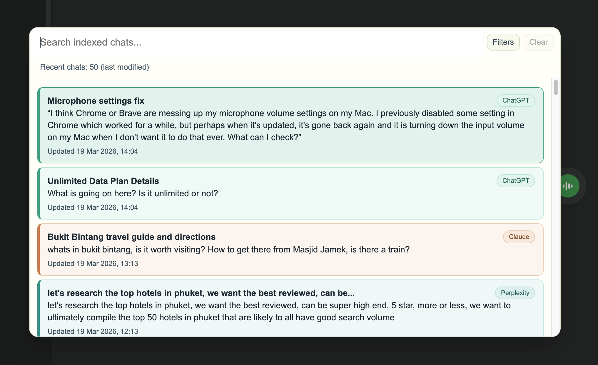

Install the extension
Takes a few seconds.
Now in early access
LLMnesia indexes your conversations across ChatGPT, Claude, Gemini and more, so you can instantly find old prompts, answers, ideas, and decisions.
Local-first. Your AI conversations never leave your browser.
If you use AI every day, this probably sounds familiar.
Your AI chats already contain real work. LLMnesia helps you find it again.
Takes a few seconds.
LLMnesia stores everything on your device, not on our servers.
Find the right conversation or exact message across supported AI platforms.
If you use multiple AI tools every week, your best work is probably scattered across dozens or hundreds of conversations. LLMnesia turns that messy chat history into something you can actually search and use.
For founders, developers, researchers, writers, and anyone using AI as part of real work.
You already solved this in AI. LLMnesia helps you find it again.
Your old answers, prompts, and decisions are already there. LLMnesia helps you find them instead of starting over.
Search across ChatGPT, Claude, Gemini and more from one place, with results stored locally for speed and privacy.
Jump straight to the message you need, not just the conversation. No endless scrolling.
Open search with a shortcut, find what you need, and get back to work in seconds.
Export and back up your conversation history so your AI work stays yours.
No accounts, no cloud sync, no data collection. Your archive stays on your device.
Free during beta.
Search conversations across leading AI platforms from one place.
More integrations are in progress based on early-access feedback.
LLMnesia stores your indexed conversations on your device, not on our servers.
Your data lives in your browser.
Nothing is uploaded, synced, or sent to the cloud.
Export or delete everything with one click.
Designed for people who cannot use cloud-based tools for sensitive work.
LLMnesia is designed to be lightweight, fast, and unobtrusive while you work. Search appears when you need it, not as another bloated dashboard competing for attention.
Fast when you need it. Invisible when you don't.
Most knowledge tools ask you to save, tag, and organize things manually. Most people do not keep that up.
LLMnesia works differently. It indexes your AI conversations automatically in the background, so the useful stuff is already there when you need it.
No tagging. No organizing. No extra system to maintain.
Open one search box. Type a few words. Instantly see matching results from ChatGPT, Claude, Gemini and more, then jump straight to the exact message you need.

One search box. Every AI platform. The exact message.
"I used to waste 10 to 15 minutes trying to remember which AI tool I'd used for something. Now I type a couple of words and it's there."
"I can't use cloud note tools for some of my work, so local-first mattered. This gives me search without sending anything anywhere."
"I jump between ChatGPT and Claude constantly. LLMnesia makes that feel like one searchable workspace instead of two separate histories."
I use AI constantly across ChatGPT, Claude, Gemini and other tools. I kept having the same frustrating experience: I knew I'd already solved something, but I couldn't remember where. Useful prompts, answers, ideas, and decisions were disappearing into chat history. I built LLMnesia to fix that for myself. Now I'm opening it up to other people who work the same way.
- Keiran
No. Everything is stored locally in your browser. LLMnesia never sends your conversations, search queries, or personal data to external servers.
When you visit a supported AI platform, LLMnesia indexes conversation content locally in your browser storage so it is searchable later. It runs automatically in the background.
Supported now: ChatGPT, Claude, Gemini, Perplexity, DeepSeek, Grok, Mistral, Kimi, Qwen, and Google AI Studio. Additional integrations are in progress.
LLMnesia is designed to stay lightweight. Indexing happens incrementally in the background while you work.
Yes. You can clear all indexed data with one click from the extension settings.
Yes. You can export and back up your conversation history in a portable format that you own.
No account is required for local indexing and search.
Yes. LLMnesia is free during beta. Founding users get preferred pricing when paid plans launch.
Free during the beta. Founding users get preferred pricing and direct input into what gets built next.
Join the BetaNo spam. Only early access and major updates.